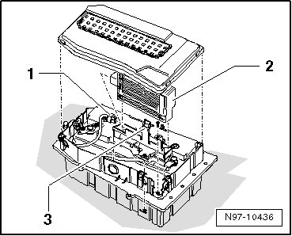

Heated Glass Control Module: Service and Repair
Heated Windshield Control Module
Removing
- Switch off ignition, switch off all electrical consumers and remove ignition key.
- Swivel driver's seat toward the rear as described in the chapter " disconnecting battery" --> [ Battery, One-Battery Layout, Disconnecting and Connecting ] Battery, One-Battery Layout, Disconnecting and Connecting.
- Remove bolt - 1 - and pull off air vent - 2 - upward.

- Open battery box clips - arrows - and remove cover.

- Disengage retaining tab - 3 - and pull Heated Windshield Control Module (J505) - 2 - upward out of bracket, paying attention to lengths of connected wires.

- Disengage and disconnect harness connector - 1 - and remove Heated Windshield Control Module (J505) - 2 - from vehicle.
Installing
Install in reverse order of removal.